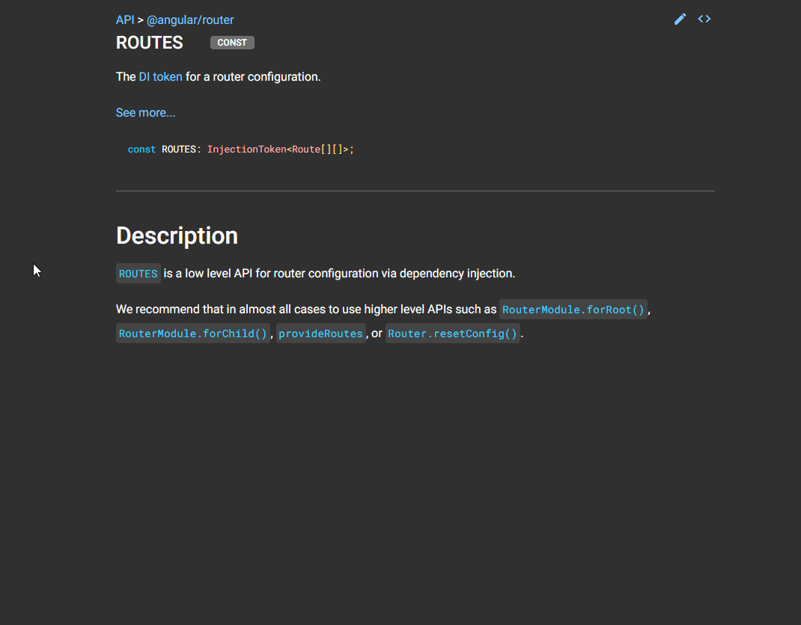

<body>
  <div class="row">
    <div class="col-xs-24">
      <nav class="navbar navbar-expand-lg bg-light">
        <div class="container-fluid">
          <div class="collapse navbar-collapse" id="navbarSupportedContent">
            <ul class="navbar-nav me-auto mb-2 mb-lg-0">
              <li class="nav-item">
                <a class="nav-link" routerLink="/routes/basic">
                  <svg xmlns="http://www.w3.org/2000/svg" width="16" height="16" fill="currentColor"
                    class="bi bi-router-fill" viewBox="0 0 16 16">
                    <path
                      d="M5.525 3.025a3.5 3.5 0 0 1 4.95 0 .5.5 0 1 0 .707-.707 4.5 4.5 0 0 0-6.364 0 .5.5 0 0 0 .707.707Z" />
                    <path
                      d="M6.94 4.44a1.5 1.5 0 0 1 2.12 0 .5.5 0 0 0 .708-.708 2.5 2.5 0 0 0-3.536 0 .5.5 0 0 0 .707.707Z" />
                    <path
                      d="M2.974 2.342a.5.5 0 1 0-.948.316L3.806 8H1.5A1.5 1.5 0 0 0 0 9.5v2A1.5 1.5 0 0 0 1.5 13H2a.5.5 0 0 0 .5.5h2A.5.5 0 0 0 5 13h6a.5.5 0 0 0 .5.5h2a.5.5 0 0 0 .5-.5h.5a1.5 1.5 0 0 0 1.5-1.5v-2A1.5 1.5 0 0 0 14.5 8h-2.306l1.78-5.342a.5.5 0 1 0-.948-.316L11.14 8H4.86L2.974 2.342ZM2.5 11a.5.5 0 1 1 0-1 .5.5 0 0 1 0 1Zm4.5-.5a.5.5 0 1 1 1 0 .5.5 0 0 1-1 0Zm2.5.5a.5.5 0 1 1 0-1 .5.5 0 0 1 0 1Zm1.5-.5a.5.5 0 1 1 1 0 .5.5 0 0 1-1 0Zm2 0a.5.5 0 1 1 1 0 .5.5 0 0 1-1 0Z" />
                    <path d="M8.5 5.5a.5.5 0 1 1-1 0 .5.5 0 0 1 1 0Z" />
                  </svg>
                  Basic Routes
                </a>
              </li>
              <li class="nav-item">
                <a class="nav-link" routerLink="/routes/child">
                  <svg xmlns="http://www.w3.org/2000/svg" width="16" height="16" fill="currentColor" class="bi bi-cloud-download" viewBox="0 0 16 16">
                    <path d="M4.406 1.342A5.53 5.53 0 0 1 8 0c2.69 0 4.923 2 5.166 4.579C14.758 4.804 16 6.137 16 7.773 16 9.569 14.502 11 12.687 11H10a.5.5 0 0 1 0-1h2.688C13.979 10 15 8.988 15 7.773c0-1.216-1.02-2.228-2.313-2.228h-.5v-.5C12.188 2.825 10.328 1 8 1a4.53 4.53 0 0 0-2.941 1.1c-.757.652-1.153 1.438-1.153 2.055v.448l-.445.049C2.064 4.805 1 5.952 1 7.318 1 8.785 2.23 10 3.781 10H6a.5.5 0 0 1 0 1H3.781C1.708 11 0 9.366 0 7.318c0-1.763 1.266-3.223 2.942-3.593.143-.863.698-1.723 1.464-2.383z"/>
                    <path d="M7.646 15.854a.5.5 0 0 0 .708 0l3-3a.5.5 0 0 0-.708-.708L8.5 14.293V5.5a.5.5 0 0 0-1 0v8.793l-2.146-2.147a.5.5 0 0 0-.708.708l3 3z"/>
                  </svg>
                  LazyLoad  And Child Routes
                </a>
              </li>
              <li class="nav-item">
                <a class="nav-link" routerLink="/routes/prog">
                  <svg xmlns="http://www.w3.org/2000/svg" width="16" height="16" fill="currentColor"
                    class="bi bi-sign-turn-right" viewBox="0 0 16 16">
                    <path
                      d="M5 8.5A2.5 2.5 0 0 1 7.5 6H9V4.534a.25.25 0 0 1 .41-.192l2.36 1.966c.12.1.12.284 0 .384L9.41 8.658A.25.25 0 0 1 9 8.466V7H7.5A1.5 1.5 0 0 0 6 8.5V11H5V8.5Z" />
                    <path fill-rule="evenodd"
                      d="M6.95.435c.58-.58 1.52-.58 2.1 0l6.515 6.516c.58.58.58 1.519 0 2.098L9.05 15.565c-.58.58-1.519.58-2.098 0L.435 9.05a1.482 1.482 0 0 1 0-2.098L6.95.435Zm1.4.7a.495.495 0 0 0-.7 0L1.134 7.65a.495.495 0 0 0 0 .7l6.516 6.516a.495.495 0 0 0 .7 0l6.516-6.516a.495.495 0 0 0 0-.7L8.35 1.134Z" />
                  </svg>
                  Programmatically Routes
                </a>
              </li>
              <li class="nav-item">
                <a class="nav-link" routerLink="/routes/parameters/parameters-card">
                  <svg xmlns="http://www.w3.org/2000/svg" width="16" height="16" fill="currentColor"
                    class="bi bi-router" viewBox="0 0 16 16">
                    <path
                      d="M5.525 3.025a3.5 3.5 0 0 1 4.95 0 .5.5 0 1 0 .707-.707 4.5 4.5 0 0 0-6.364 0 .5.5 0 0 0 .707.707Z" />
                    <path
                      d="M6.94 4.44a1.5 1.5 0 0 1 2.12 0 .5.5 0 0 0 .708-.708 2.5 2.5 0 0 0-3.536 0 .5.5 0 0 0 .707.707ZM2.5 11a.5.5 0 1 1 0-1 .5.5 0 0 1 0 1Zm4.5-.5a.5.5 0 1 0 1 0 .5.5 0 0 0-1 0Zm2.5.5a.5.5 0 1 1 0-1 .5.5 0 0 1 0 1Zm1.5-.5a.5.5 0 1 0 1 0 .5.5 0 0 0-1 0Zm2 0a.5.5 0 1 0 1 0 .5.5 0 0 0-1 0Z" />
                    <path
                      d="M2.974 2.342a.5.5 0 1 0-.948.316L3.806 8H1.5A1.5 1.5 0 0 0 0 9.5v2A1.5 1.5 0 0 0 1.5 13H2a.5.5 0 0 0 .5.5h2A.5.5 0 0 0 5 13h6a.5.5 0 0 0 .5.5h2a.5.5 0 0 0 .5-.5h.5a1.5 1.5 0 0 0 1.5-1.5v-2A1.5 1.5 0 0 0 14.5 8h-2.306l1.78-5.342a.5.5 0 1 0-.948-.316L11.14 8H4.86L2.974 2.342ZM14.5 9a.5.5 0 0 1 .5.5v2a.5.5 0 0 1-.5.5h-13a.5.5 0 0 1-.5-.5v-2a.5.5 0 0 1 .5-.5h13Z" />
                    <path d="M8.5 5.5a.5.5 0 1 1-1 0 .5.5 0 0 1 1 0Z" />
                  </svg>
                  Parameters Routes
                </a>
              </li>
              <li class="nav-item">
                <a class="nav-link" routerLink="/routes/query-parameters">
                  <svg xmlns="http://www.w3.org/2000/svg" width="16" height="16" fill="currentColor"
                    class="bi bi-sign-turn-right" viewBox="0 0 16 16">
                    <path
                      d="M5 8.5A2.5 2.5 0 0 1 7.5 6H9V4.534a.25.25 0 0 1 .41-.192l2.36 1.966c.12.1.12.284 0 .384L9.41 8.658A.25.25 0 0 1 9 8.466V7H7.5A1.5 1.5 0 0 0 6 8.5V11H5V8.5Z" />
                    <path fill-rule="evenodd"
                      d="M6.95.435c.58-.58 1.52-.58 2.1 0l6.515 6.516c.58.58.58 1.519 0 2.098L9.05 15.565c-.58.58-1.519.58-2.098 0L.435 9.05a1.482 1.482 0 0 1 0-2.098L6.95.435Zm1.4.7a.495.495 0 0 0-.7 0L1.134 7.65a.495.495 0 0 0 0 .7l6.516 6.516a.495.495 0 0 0 .7 0l6.516-6.516a.495.495 0 0 0 0-.7L8.35 1.134Z" />
                  </svg>
                  Query Parameters</a>
              </li>
              <li class="nav-item">
                <a class="nav-link" routerLink="/routes/not-found">
                  <svg xmlns="http://www.w3.org/2000/svg" width="16" height="16" fill="currentColor" class="bi bi-compass" viewBox="0 0 16 16">
                    <path d="M8 16.016a7.5 7.5 0 0 0 1.962-14.74A1 1 0 0 0 9 0H7a1 1 0 0 0-.962 1.276A7.5 7.5 0 0 0 8 16.016zm6.5-7.5a6.5 6.5 0 1 1-13 0 6.5 6.5 0 0 1 13 0z"/>
                    <path d="m6.94 7.44 4.95-2.83-2.83 4.95-4.949 2.83 2.828-4.95z"/>
                  </svg>
                  Not Found Routes</a>
              </li>
              <li class="nav-item">
                <a class="nav-link" routerLink="/routes/canActivate-component">
                  <svg xmlns="http://www.w3.org/2000/svg" width="16" height="16" fill="currentColor" class="bi bi-activity" viewBox="0 0 16 16">
                    <path fill-rule="evenodd" d="M6 2a.5.5 0 0 1 .47.33L10 12.036l1.53-4.208A.5.5 0 0 1 12 7.5h3.5a.5.5 0 0 1 0 1h-3.15l-1.88 5.17a.5.5 0 0 1-.94 0L6 3.964 4.47 8.171A.5.5 0 0 1 4 8.5H.5a.5.5 0 0 1 0-1h3.15l1.88-5.17A.5.5 0 0 1 6 2Z"/>
                  </svg>
                  CanActivate and CanActivateChild </a>
              </li>

            </ul>
          </div>
        </div>
      </nav>
    </div>
  </div>
  <main>
    <div class="row">
      <div class="col-xs-12">
        <div class="d-grid gap-2 d-md-flex justify-content-md-end">
          <button type="button" class="btn btn-outline-dark" routerLink="/home">Back Home</button>
        </div>
      </div>
    </div>
    <div class="row ">
      <div class="col-xs-12 image">
        <h2><a href="https://angular.io/api/router/ROUTES" target="_blank">Create Routes by Angular CLI or go to Angular.io</a>
        </h2>
      </div>
      <div class="col-xs-12">
        <div class="image">
          
        </div>
      </div>
    </div>
  </main>
</body>
